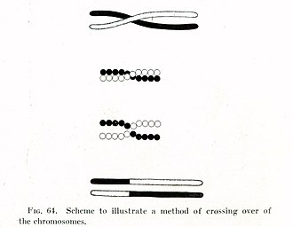

Genética clásica, síntesis moderna y teoría evolutiva
1900 marcó el llamado redescubrimiento de Mendel: Hugo de Vries, Carl Correns y Erich von Tschermak llegaron independiente a las leyes de Mendel (que en realidad no están presentes en el trabajo de Mendel). Poco después, los citólogos (biólogos celulares) propusieron que los cromosomas eran el material hereditario. Entre 1910 y 1915, Thomas Hunt Morgan y los «drosofilistas» con su mosca de laboratorio forjaron estas dos ideas —ambas controversiales— dentro de la «teoría cromosómica mendeliana» de la herencia. Ellos cuantificaron el fenómeno de ligamiento genético y postularon que los genes residen en los cromosomas como las cuentas de una cadena; plantearon la hipótesis del entrecruzamiento cromosómico para explicar el ligamiento y la construcción de mapas genéticos de la mosca de la fruta Drosophila melanogaster, que se convirtió en un organismo modelo ampliamente utilizado.
Hugo de Vries trató de vincular a la nueva genética con la evolución; basándose en su trabajo sobre la herencia y la hibridación, propuso una teoría de mutacionismo, que fue ampliamente aceptada en el siglo xx. El lamarckismo también tuvo muchos adeptos. El darwinismo era visto como incompatible con los rasgos continuamente variables estudiados por la biometría, que parecían sólo parcialmente hereditarios. En la década de 1920 y 1930 —tras la aceptación de la teoría cromosómica mendeliana— el surgimiento de la disciplina de la genética de poblaciones, con el trabajo de R. A. Fisher, J. B. S. Haldane y Sewall Wright, unificó la idea de la evolución por selección natural con la genética mendeliana, produciendo la síntesis moderna. La herencia de caracteres adquiridos fue rechazada, mientras que el mutacionismo dio lugar a la maduración de teorías genéticas.
En la segunda mitad del siglo, las ideas sobre genética de poblaciones comenzaron a aplicarse en las nuevas disciplinas de la genética del comportamiento, la sociobiología, y especialmente en seres humanos, la psicología evolutiva.
En la década de 1960 W. D. Hamilton entre otros desarrollaron la teoría de juegos enfocada en explicar el altruismo desde una perspectiva evolutiva a través de la selección de parentesco. El posible origen de los organismos superiores a través de la endosimbiosis, en contrastante con los enfoques de la evolución molecular desde una visión centrada en el gen (que tiene a la selección como la causa predominante de la evolución) y la teoría neutralista (que hace de la deriva genética un factor clave) dio lugar a debates permanentes sobre el equilibrio adecuado entre adaptacionismo y contingencia en la teoría evolutiva.
En la década de 1970, Stephen Jay Gould y Niles Eldredge propusieron la teoría del equilibrio puntuado, que sostiene que la inmutabilidad es la característica más destacada del registro fósil, y que la mayoría de los cambios evolutivos se producen rápidamente durante periodos relativamente cortos de tiempo.
En 1980, Luis Álvarez y Walter Alvarez propusieron la hipótesis de que un impacto astronómico fue el responsable de la extinción masiva del Cretácico-Terciario.
También en la década de 1980, el análisis estadístico en los registros fósiles de organismos marinos publicado por Jack Sepkoski y David M. Raup, llevó a una mejor apreciación de la importancia de los eventos de extinción masiva en la historia de la vida en la Tierra.
Ilustración del entrecruzamiento cromosómico de Thomas Hunt Morgan, parte de la teoría cromosómica mendeliana de la herencia.